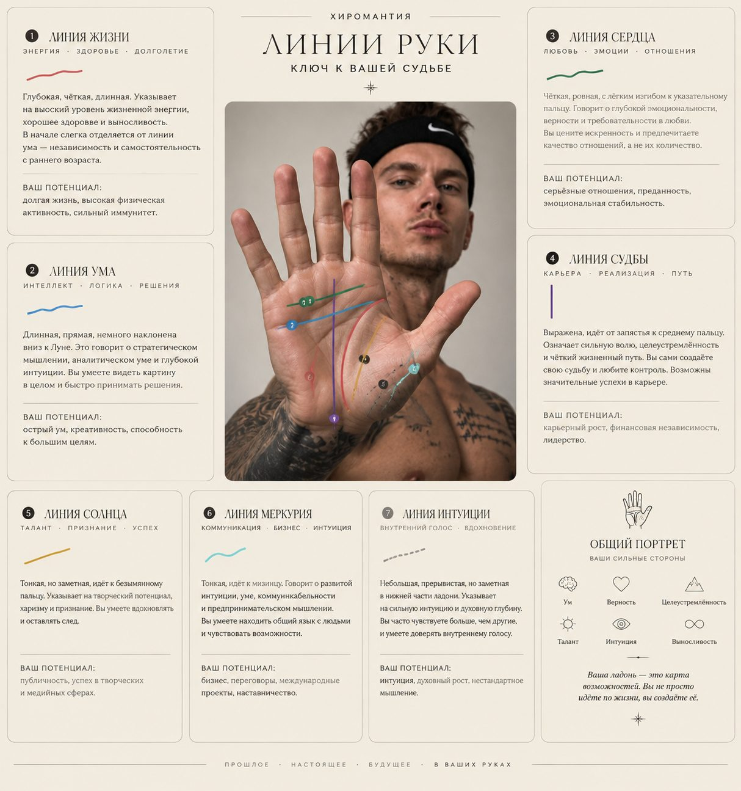
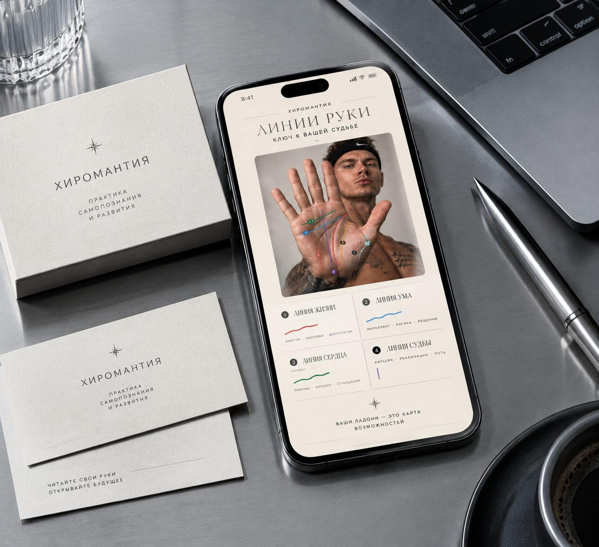
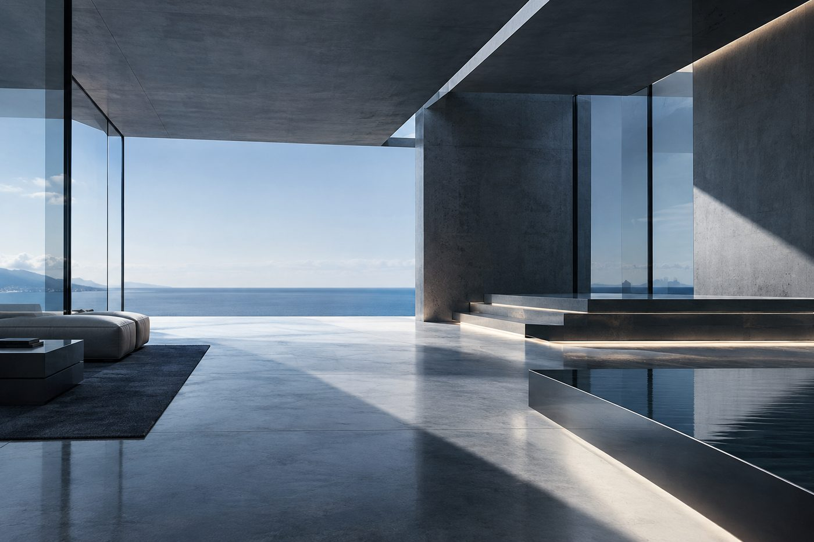

Что вообще смотрят
Линий на ладони семь, и они не равнозначны: три разбирают постоянство характера, четыре — то, что меняется вместе с обстоятельствами.
Постоянные — линия жизни, линия ума, линия сердца. Их сравнивают с тем, что человек уже знает о себе: если рисунок не сходится с самооценкой, значит смотреть надо не на линии, а на то, почему человек её врёт.
Переменные — линия судьбы, линии Солнца, Меркурия и Интуиции. Они меняются с нагрузкой и возрастом, поэтому по ним не составляют прогноз, а отмечают направление: что менялось и куда шло.
Карта в телефоне
Тот же разбор, но с фотографией ладони: линии подсвечиваются прямо на снимке, подписи меняются при прокрутке.
- Съёмка ладони при ровном свете, без вспышки — иначе линии теряются в блике.
- Разметка ищет семь линий и подписывает каждую, а не «кажется, эта — жизнь».
- История разборов остаётся на устройстве и не уходит на сервер.
Макет приложения, а не рабочее приложение: разметки на фото нет, показан интерфейс.


Где это делают
Не в кабинете с диваном и музыкой. Обычно за столом, в тишине, рядом с окном — чтобы разговор шёл о человеке, а не о декорациях.
Формат — двадцать минут на человека. Больше не нужно: за получасовой встречей успевает сказать больше, чем разбор показывает, и он перестаёт быть разговором.
Семь линий
- Линия жизниздоровье и устойчивость привычек
- Линия умаобраз мышления и то, как он меняется с возрастом
- Линия сердцато, что человек ставит выше отдыха
- Линия судьбынаправление перемен, а не список событий
- Линия Солнцапубличность и своё дело
- Линия Меркурияречь, учёба, работа руками
- Линия интуициикогда решение приходит раньше аргументов
С чего начать
С ладони, которой не видно. Вытяните левую руку ладонью вверх, держите её при дневном свете и смотрите на расстоянии вытянутой руки — линии должны читаться целиком, а не отрывочно.
Не водите пальцем по сгибам и не ищите «свою» линию среди всех: сравнение не работает, потому что линия одна. Разговор начинается с того, что человек видит на своей ладони первым, и неважно, увидит он линию жизни или чёрту между пальцами.
Материал для съёмки. Фото из натурных съёмок, взято для раздела о натурном разборе. Макеты сделаны из таких снимков: одна ладонь, ровный свет, без лишнего в кадре.